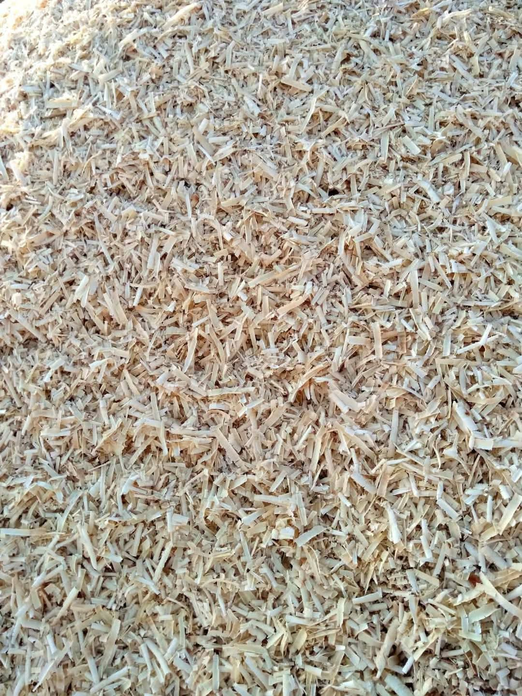
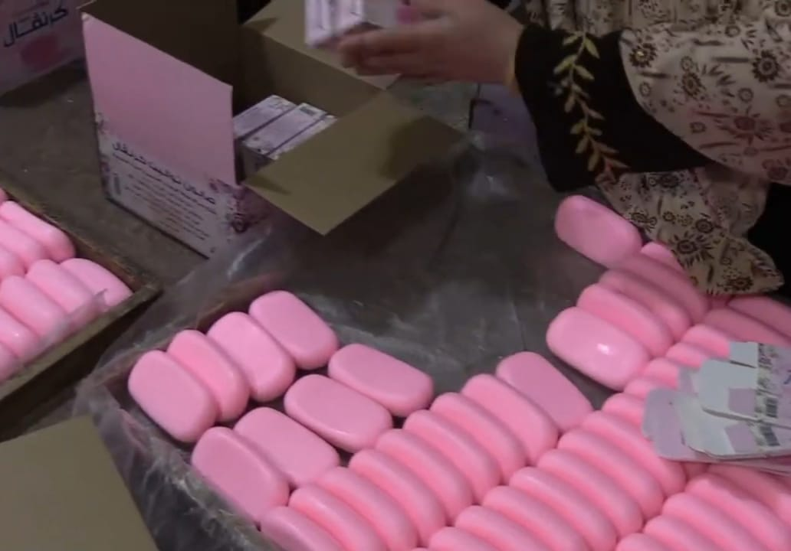
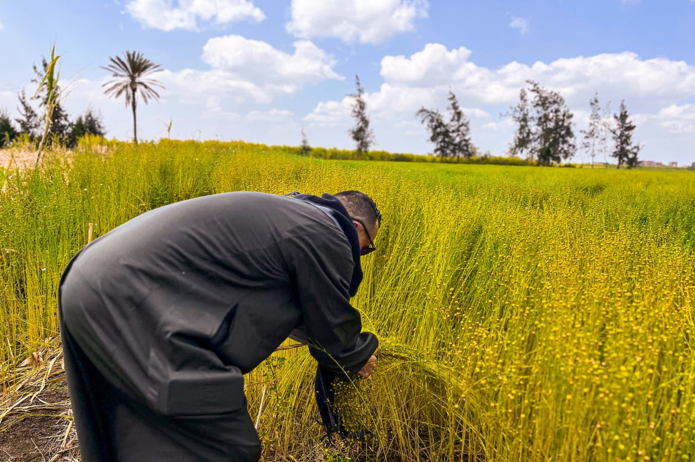

تحديات الإنتاج والمنافسة: كيف تواجه ورش "الحداد" شبح الاندثار؟

من مخلفات الورش إلى قيمة مضافة: كيف تحول "كتامة" نشارة الخشب إلى مصدر دخل؟

صمود وإصرار: رحلة عمال "كفر الزيات" في مواجهة تحديات الزمن داخل مصنع الصابون.

شبراملس في الغربية تُعد الكتان أهم المحاصيل الزراعية التي يعتمد عليها الأهالي